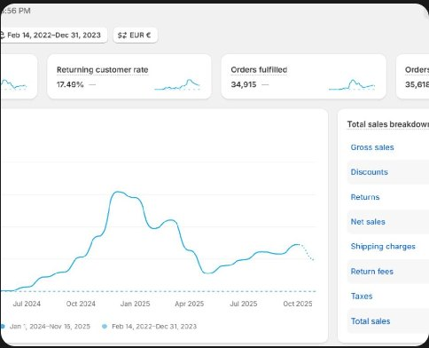
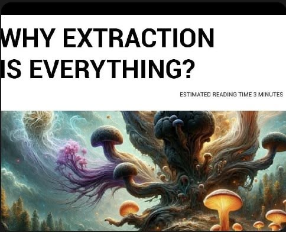
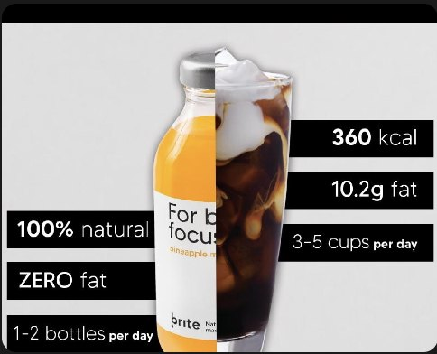
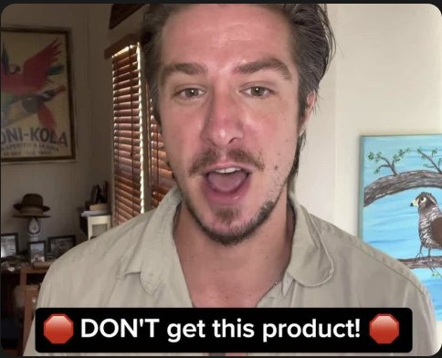
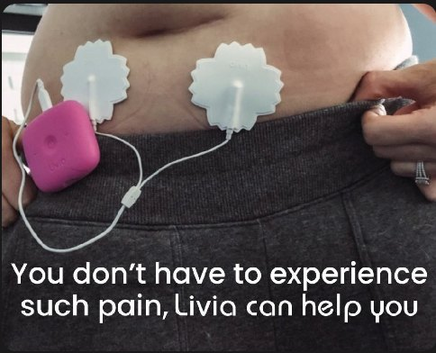
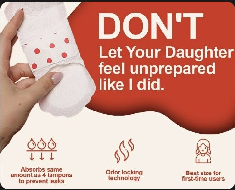
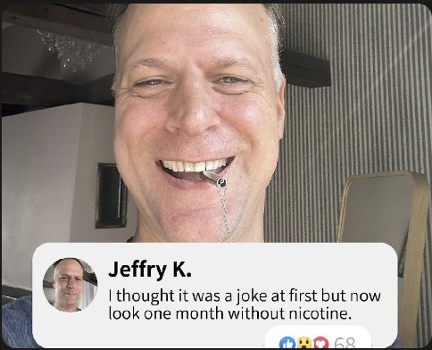
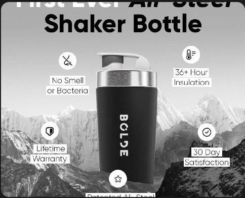
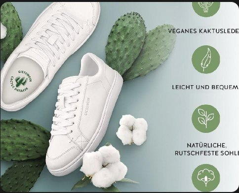
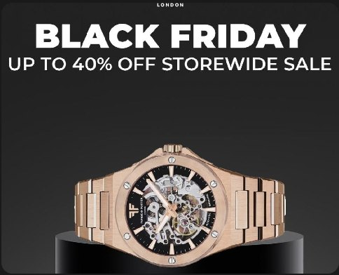

Direct-response performance creative for DTC supplement, health and wellness brands. I map awareness and sophistication stages, write the hooks before anything gets designed, and brief the editors so they can execute without a back-and-forth. I do not edit and I do not buy media.

DTC creative strategy for a women's supplement brand selling into the German market. This is the largest engagement in the portfolio and the one that best describes how I work, because the category made the constraint impossible to ignore: the ad account was suspended repeatedly over the life of the work, so every angle had to be written to survive review as well as convert.
Fifty-three campaigns were run. The creative pipeline ran statics and UGC video in parallel against the same angle set, which meant a winning message could be identified separately from the format carrying it. Angles were mapped against awareness and sophistication stage before anything was designed, so each test round answered a question rather than just producing assets.

Advertorial creative for a category where nearly every competitor advertises the same ingredient list. The differentiator chosen was extraction quality — a specification most brands bury in the FAQ — and the mechanism of the product became the story.
Advertorial was the right format because the argument needs room. A 15-second video cannot explain why extraction ratio changes what the customer actually absorbs; a long-form editorial can, and it gives the ad something to say that a competitor cannot copy inside a week.

DTC performance creative for Meta. Statics and UGC video developed in parallel against a shared angle set, so format and message could be evaluated independently rather than confounded inside a single test.

Compliant direct-response creative for a category most strategists will not take on, because the failure mode is not a bad CPA. It is a dead ad account, and with it every audience signal and learning the account had accumulated.
Every hook was written to clear review on the first pass. That constraint shapes the copy: you cannot promise an outcome, so you sell the situation and the identity around it instead. Eleven campaigns were run to $1.2M in net sales at 2.1× blended.
If your product touches health claims, minors, detox, or anything Meta treats as sensitive, this is the work that matters more than the ROAS number above it. Ask me about it directly.

UGC and comparison creative for a wearable device treating period pain without medication. The creative was built on comparison framing against the painkiller the customer already reaches for.

Emotional direct-response creative. The structural problem here is that the buyer is a parent and the user is a child, and the two need different promises inside a single ad.

UGC and social-proof creative. Testimonial-led throughout, because in habit change the only voice a sceptical buyer finds credible is somebody who has already done the thing.
The creative overlays a real comment onto the testimonial itself, so the proof and the story arrive in the same frame rather than asking the viewer to go looking for reviews.

DTC product creative for Meta. A considered-purchase object in a category dominated by cheap plastic, so the creative had to justify a price gap rather than describe a feature.

Benefits-led creative for the German market, translating a materials story (cactus leather, organic cotton) into a reason to buy rather than a sustainability claim. Sustainability is a tiebreaker, not a purchase driver, so the copy led with what the buyer gets.

Product-hero and Black Friday creative. Discount-led promotional work where the offer carries the ad and the product photography has to make the original price look real.
Scaled SteadyEcom to $2M a year, owning creative strategy alongside the funnel, the automations and the ads attribution — so I read the numbers that say which creative is actually working, not just the ones in Ads Manager.
Built and sold an AI marketing agency (Avalanche AI), with clients including Wholesome Good.
Led a team of 70 at NexxAI across marketing, creative strategy and AI.
Past 5M views on short-form and UGC for a supplement brand, converted to sales rather than left as reach.
Grew a wellness brand from 800 to 13K followers in six months, fully organic.
Compliance: I write inside structure-and-function claims plus FTC and FDA rules. In health and wellness this is usually the difference between a campaign that compounds and an account that gets restricted.
Send me your product page and your current best-performing ad. I'll come back with three angles I'd test against it and the reasoning behind each, written out, no call required. If it's useful we can talk. If it isn't, you've lost nothing.
Send me your product page